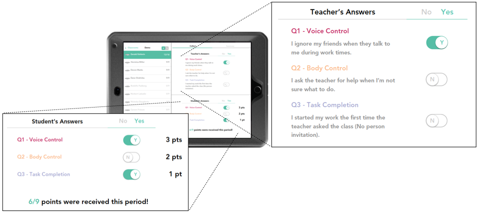

PlantEz:
House Plants Made Easy
Using the human-centered design process to create an interactive high-fidelity prototype
PlantEz Interactive Prototype
Storyboards:
Personas:
Wireframes:
Consulting/Contextual Inquary:
Qualitative Research with Real World Clients
This project - a collaborative partnership between the Institute of Healthcare Policy and Innovation (IHPI) and Team 4D aimed to examine the current method of data collection and data dissemination the team uses for the National Poll on Healthy Aging (NPHA) report. A team of 7-10 people within IHPI work collaboratively on the report. The team is lead by the Director of the Institute. Though the team is highly collaborative, the report generation process could overcome some inefficiencies. Team 4D was brought in to help examine the process and propose solutions moving forward to further enhance the situation.

Supporting Behavior Management with a Classroom Display Providing Immediate Feedback to Students
Managing behaviors in classroom settings requires clear communi- cation of expectations, and consistent feedback to students about whether the expectations are being met. The literature indicates a signi cant gap between evidence-based strategies for behavior management and implementation of these strategies in real class- room settings. To address this gap, we engaged school practitioners in examining and designing for the implementation challenges they face. This work focused on one of the most common classroom behavior management strategies, the token economy, and how it is utilized across special education and regular education settings. Us- ing the approaches of action research and human-centered design, we explored the integration of pervasive computing technologies in classroom practices to address key implementation challenges. We present a resulting prototype that we developed and deployed, a classroom display, and describe its integration into the classroom ow. We discuss ndings about the role pervasive computing can play in supplementing existing classroom behavior management practices to help students be aware of their behaviors throughout the school day.
Supporting Student Awareness of their Behavioral Data through a Smartwatch Application
Preparing students to transition from special education into regular education is part of a practitioner’s responsibilities. To successfully do this, special education programs should provide students with strategies to help them succeed in the regular education environment, where many of their day to day supports will decrease. One of these strategies is self-management. Self-management has been used to decrease student’s undesired behavior and make them more aware of their behaviors and associate consequences. This strategy has also found to be helpful preparing students to transition from special into a regular education setting. In this poster, we present our design iterations for a student-centered application designed to help practitioners teach students self-management to help promote a successful transition between educational settings.
